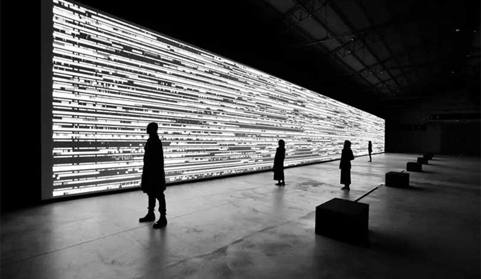

We've fragmented our natural sensory experience—screens for vision, speakers for sound, keyboards for touch—creating artificial boundaries where none existed.
What if the "missing sense" we've always searched for, or what we've always called the "6th sense," isn't a new sense at all, but the natural integration of all our senses? What if there are senses we haven't even discovered yet?
This project uses computational design to reunite our fragmented perception, creating new sensory experiences that transcend the artificial boundaries we've built.
The Missing Sense
Computational Design for Sensory Integration
Impossible Combinations
taste colors
see sounds
smell shapes
feel memories
hear textures
touch emotions
taste thoughts
see time
hear silence
The Argument
If we can transcend the built boundaries of the five-sense model,
then we can treat sensory integration as a design material
then we can treat sensory integration as a design material
Built Boundaries: De Anima, Aristotle, 350 BC
Built Boundaries: Treatise on Man, Descartes, 1662

Built Boundaries: Opticks, Newton, 1704
Senses Integrated: Machine Hallucination, Anadol, 2019
Senses Integrated: Borderless, teamLab, 2018

Senses Integrated: Pulse Room, Hemmer, 2006

Senses Integrated: Data-verse, Ikeda, 2019

Research Network
Research Question
How can computational design create new sensory experiences that transcend the traditional five-sense model?